Главное дерево тайги Европейской России. Имеет густую коническую крону, колючую четырёхгранную хвою и поверхностную корневую систему. Теневынослива, образует влажные, тенистые ельники. Древесина мягкая, идёт на производство бумаги, пиломатериалов и музыкальных инструментов (резонансная ель). Шишки вытянутые, свисающие вниз.
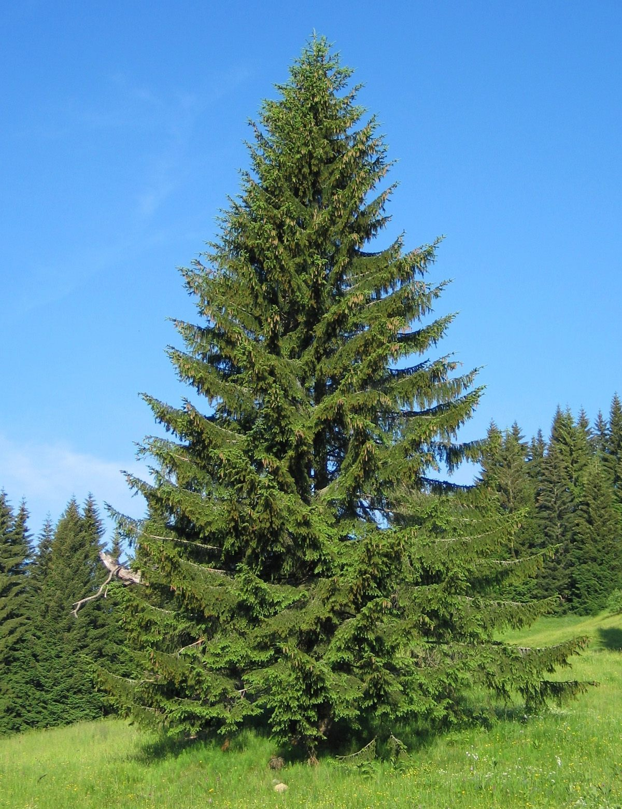
Светолюбивое вечнозелёное дерево с характерной рыжеватой корой в верхней части ствола. Растёт на любых почвах: от болот до сухих песков. Хвоя длинная, собрана по две иголки. Древесина смолистая и прочная, идеальна для строительства. Даёт ценную живицу для получения скипидара и канифоли.
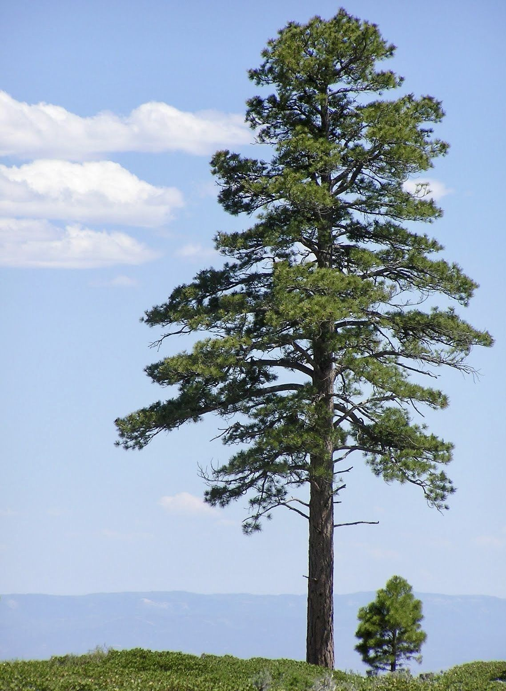
Величественное хвойное дерево-долгожитель (живёт до 800 лет) с густой кроной и мягкой хвоей (по пять иголок в пучке). Знаменит вкусными и питательными кедровыми орешками. Древесина мягкая, с приятным ароматом, легко обрабатывается и традиционно используется для изготовления карандашей, мебели и декоративных изделий.
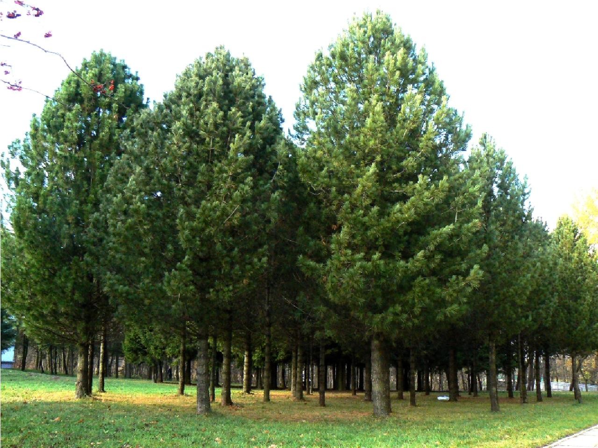
Самая распространённая древесная порода в России. Уникальна тем, что, в отличие от других хвойных, сбрасывает мягкую хвою на зиму, что помогает выживать в экстремальных морозах. Её древесина невероятно плотная, тяжёлая и не гниёт в воде, веками используется в судостроении и как подводные сваи.
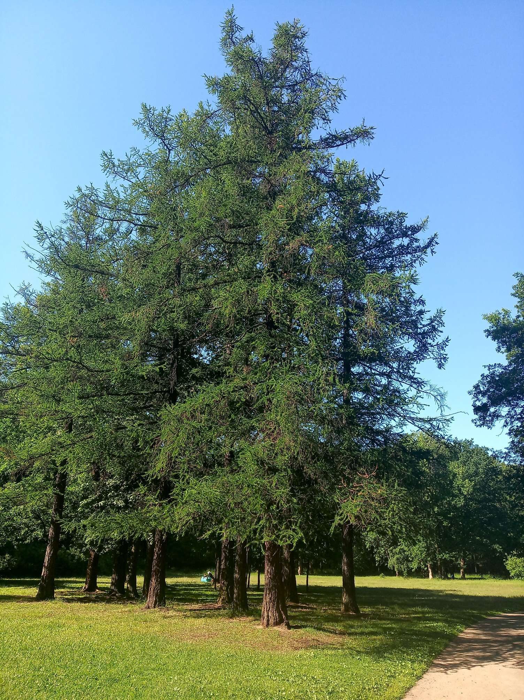
Узнаваемый символ России с белой шелушащейся корой (берестой) и изящными повислыми ветвями. Светолюбива, быстро растёт, часто первой заселяет лесные вырубки и гари. Древесина плотная, используется в столярном деле. Берёзовый сок, дёготь и банные веники широко применяются в быту и народной медицине.
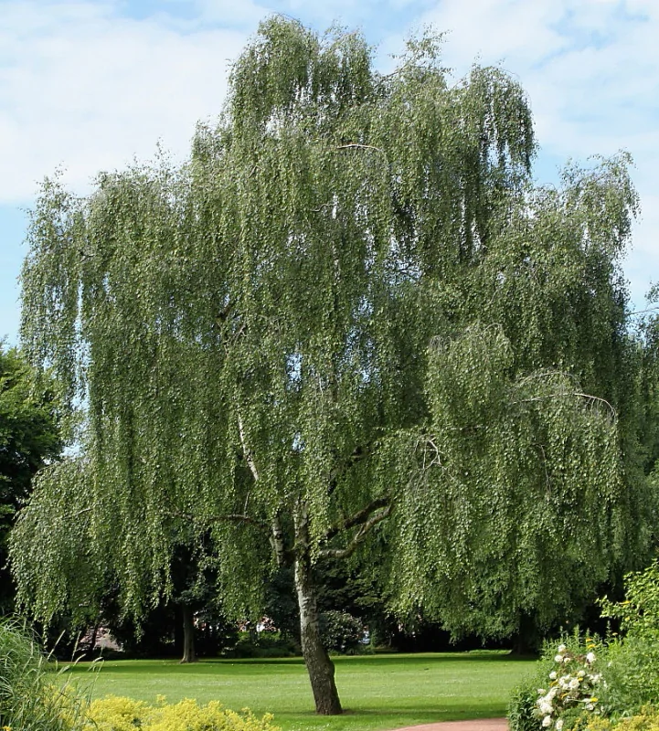
Мощное листопадное дерево-долгожитель (живёт до 1000 лет), символ силы и мудрости. Характерен для лесостепей Европейской России. Даёт жёлуди – важный корм для лесных животных. Древесина очень твёрдая, тяжёлая, с красивой текстурой, незаменима в мебельном производстве, бондарном деле (бочки) и строительстве.
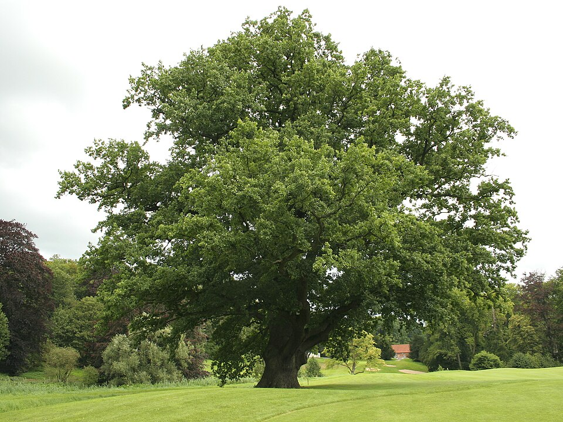
Листопадное дерево с гладкой зеленоватой корой и округлыми листьями на длинных сплюснутых черешках, из-за чего они «дрожат» от малейшего ветра. Растёт очень быстро, часто образует вторичные леса. Белая, мягкая древесина осины идёт на производство спичек, тары и художественную резьбу.
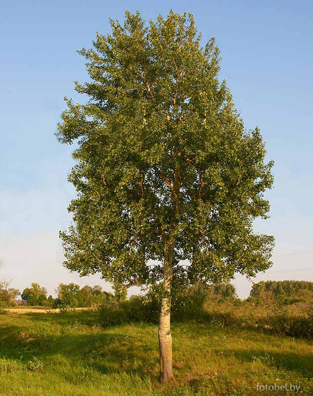
Теневыносливое дерево с сердцевидными листьями и душистыми желтоватыми цветками, привлекающими пчёл. Липовый мёд считается одним из самых ценных. Древесина мягкая, однородная, белая, идеально подходит для художественной резьбы по дереву, изготовления кухонной утвари, музыкальных инструментов и банных принадлежностей.
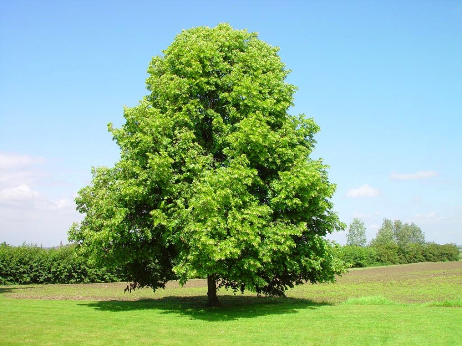
Вечнозелёное хвойное дерево с узкоконической кроной и плоской, мягкой хвоей, не колючей на ощупь. Шишки растут вертикально вверх и рассыпаются на дереве при созревании, не опадая целиком. Древесина лёгкая, без смоляных ходов, используется для производства целлюлозы, тары и строительства.
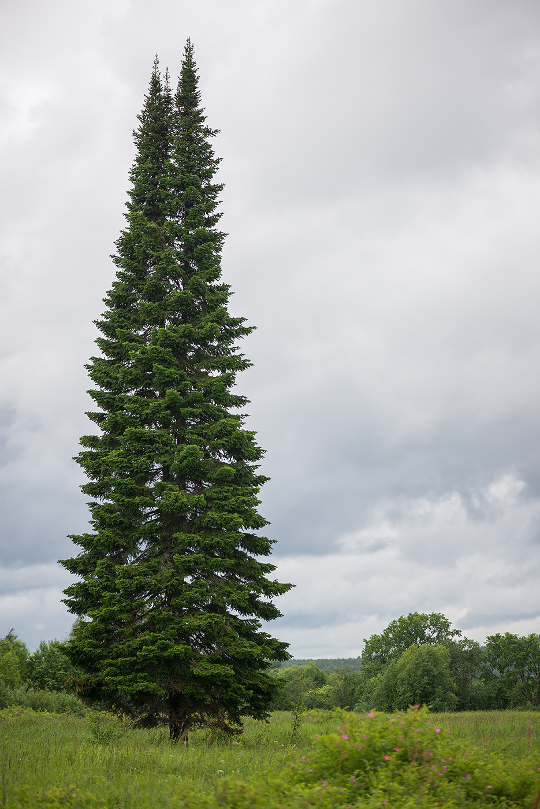
Дерево, растущее преимущественно по берегам рек и на заболоченных участках. Характерна тёмная, почти чёрная кора. Обогащает почву азотом благодаря симбиозу с клубеньковыми бактериями. Древесина мягкая, но при намокании становится очень прочной, исторически использовалась для строительства подводных свай и мостов.
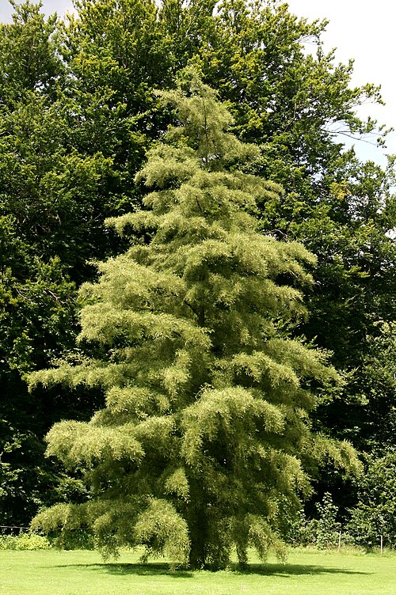
Красивое листопадное дерево с широкой кроной и крупными пятилопастными листьями, ярко желтеющими осенью. Даёт обильный нектар для пчёл. Древесина твёрдая, прочная, с красивой текстурой, применяется в столярном деле, для изготовления музыкальных инструментов (например, дек скрипок) и декоративного шпона.
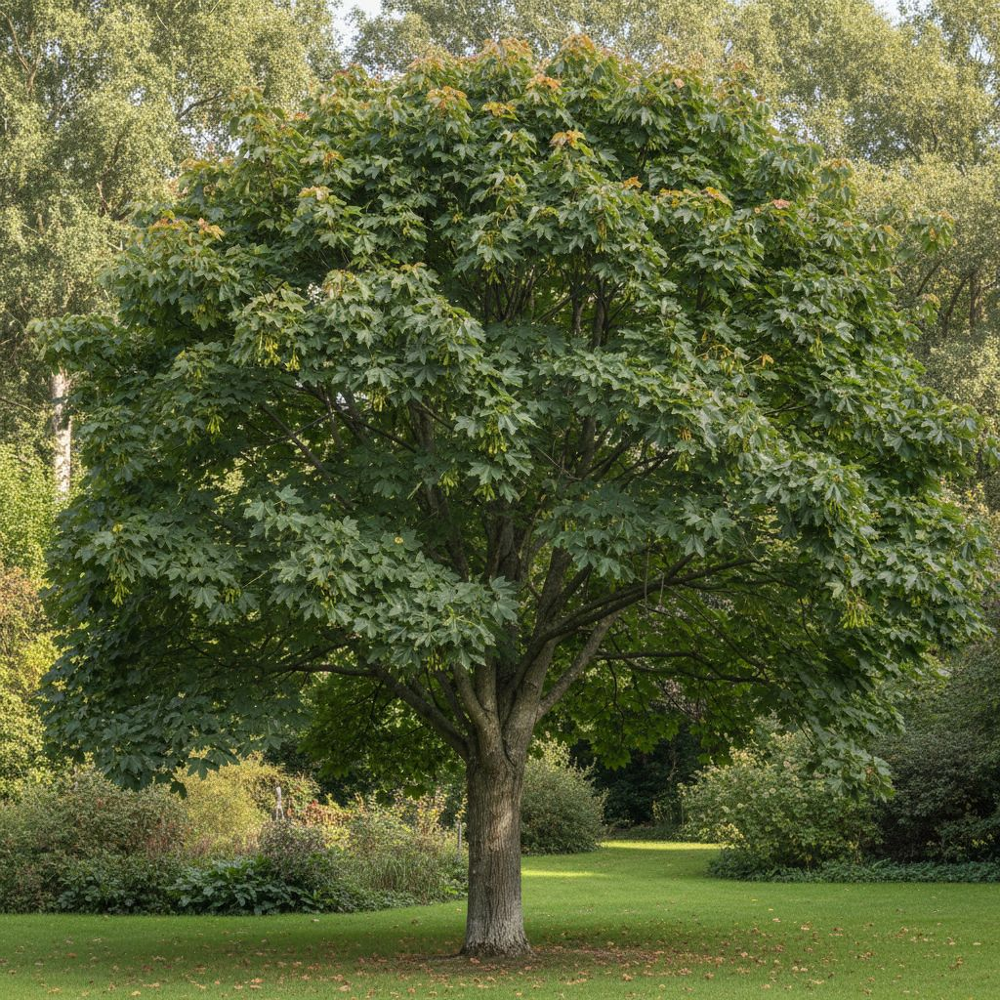
Высокое листопадное дерево с ажурной кроной и сложными непарноперистыми листьями. Древесина ясеня по прочности уступает только дубу, но при этом обладает отличной гибкостью и упругостью. Широко используется для изготовления спортивного инвентаря (лыжи, биты), рукояток инструментов, гнутой мебели и паркета.
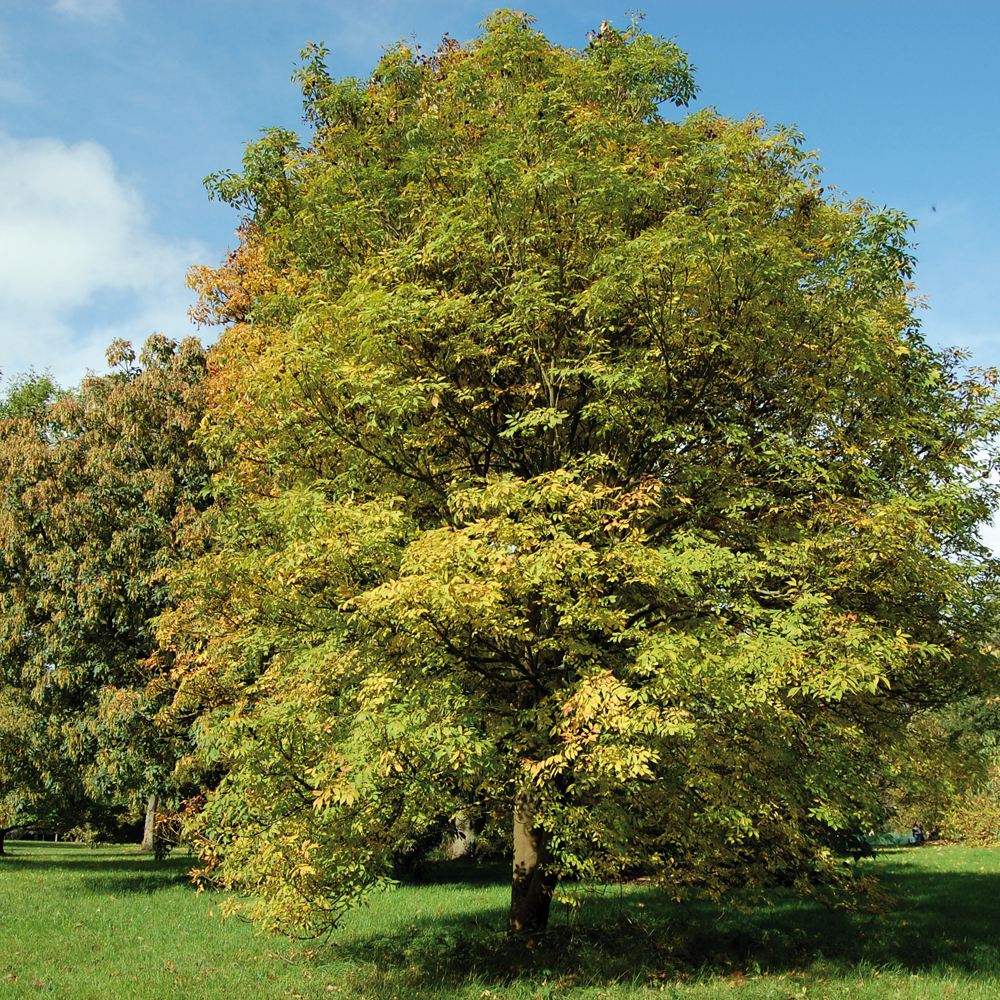